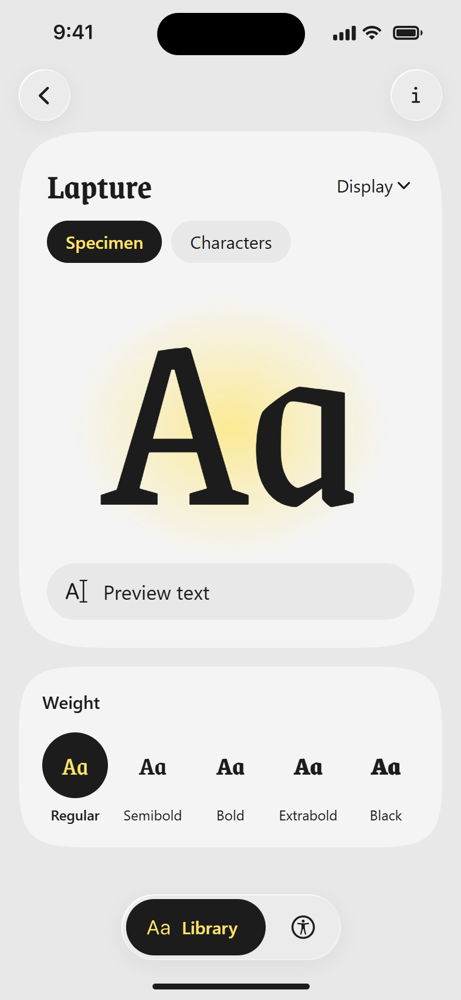
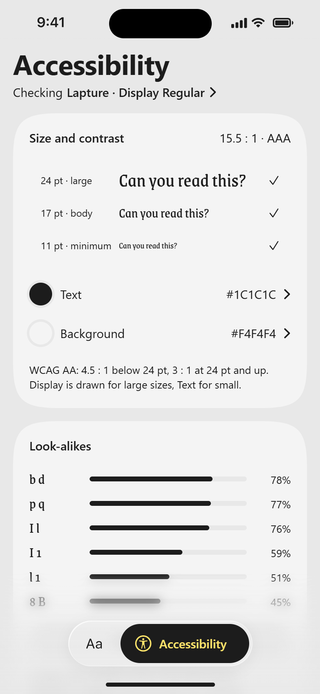
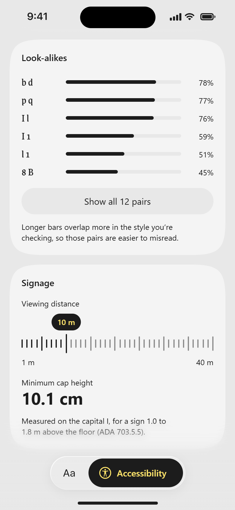

An iOS app for trying a display typeface and checking whether it stays readable: contrast at each size, letters that look alike, and how large to set it on a sign.
A specimen shows the letters, not whether they read
Pitching a typeface to a client on site, a PDF specimen shows the letters. It can't tell you if people can read them.
Text and Display sit apart
Lapture's Display cut is drawn for large sizes and its Text cut for small text. Specimens list them as separate styles, never side by side.
The guidance lives elsewhere
Contrast, sign sizes and the letter pairs readers confuse all have published guidance. None of it is in the specimen.
Research
Six specimens and apps, and what they leave out
I compared Lapture's foundry page and its Adobe Fonts listing with four apps designers already use for type: Typography Insight, WhatTheFont, Adobe Capture and Fontstand.
Feature
Typography Insight
JAF Lapture page
Adobe Fonts
What TheFont
Adobe Capture
Fontstand (iPad)
TypePass
Works on a phone
Has
?Not confirmed
?Not confirmed
Has
Has
Lacks
Has
Type your own text
?Not confirmed
Lacks
Has
Lacks
Lacks
?Not confirmed
Has
Close look at letter anatomy
Has
Lacks
Lacks
Lacks
Lacks
Lacks
Has
Text and Display compared
?Not confirmed
Lacks
?Not confirmed
Lacks
Lacks
Lacks
Has
has lacks? not confirmed
Tracing one task
Naming the font on Gmail's Compose button from a photo in WhatTheFont: the camera and its dashed boxes made the next step obvious, but nothing said which box to tap, and the top matches looked nothing like Gmail's sans.
Takeaway
Each covers a piece. Typography Insight looks closely at letters, Adobe Fonts lets you type your own text, and none compares Text and Display. TypePass puts them in one app on a phone, then adds the accessibility checks.
My first concept tried to cover all three opportunities: Lapture on the client's storefront through the camera, three checks, and a link to send the client mock-ups. It did a little of everything and nothing well. So I kept the one idea I hadn't seen typeface apps take on: whether the type is readable.
"A specimen app that tells you if your typeface passes."
Process
Set it up in Library, check it in Accessibility
The flow took seven versions to get here. In the final one, you pick Lapture in Library and set its cut, weight and preview text, and Accessibility checks that same setup.
An earlier version saved styles for Accessibility to check. Nothing else read the saved list, so Accessibility now checks what is set on the Lapture page.
Signage is always on
Sign distance is the one opportunity I kept from the first concept, so it isn't hidden behind a switch.
Five ways to pick a weight, then a sixth
I tried the weight picker as circles, a stepped slider, a list, a dial and a type strip. I kept a sixth: the letters do the comparing and only the pick gets a black circle, the same rule as the tab bar's black pill. One shape instead of five keeps the card quiet next to the specimen.
Each Accessibility card went through three versions, judged against WCAG and the app's own rules. Look-alikes went from yellow tiles to ranked bars: the tiles showed risk by colour alone, and yellow already meant the live result. Size and contrast became one card, because WCAG's contrast rule depends on the size of the text.
Testing
What testing in pairs changed
I tested the hi-fi prototype with classmates in pairs. Their feedback came down to three things.
Microinteractions
Every tap now gets a response. One spring runs almost everything, so the app feels like one thing, and a bouncier one is kept for things that pop in.
One shape language
Cards, rows and buttons now share one squircle corner, after I worked out what a squircle actually is.
Onboarding
The app used to start by asking for a client's name. Now it opens straight on the Library.
The Library opens on Lapture in focus. Scroll the stack, filter to Serif, Sans or Other, or search by name.
A weight, your own words, then Text
Setting a style
Pick one of five weights, type your own words, and switch between the Display cut for large sizes and the Text cut for small text. Text only has Regular and Bold, so the weights follow.

One letter, the next, then Black
Every character
The full character set in a grid. Tap one to see it large against its ascender, cap height, x-height, baseline and descender, then step to the next.

Too light, then the nearest pass
Contrast
Change the text or background colour and every size is checked against WCAG as you drag. When a colour fails, the app offers the nearest one that passes.

Look-alikes, then distance and cap height
Look-alikes and signage
Look-alikes ranks the letter pairs readers most often confuse by how much they overlap in this style. Signage turns a viewing distance into a minimum cap height, from the ADA standard.
Credits, and the sources behind the checks
Credits and sources
Credits names Lapture’s designers and foundry, and the sources behind every check.
Reflections
What the checks can't say yet
Two limits are still open.
Look-alikes have no pass mark
Scores come from overlapping each pair's letter shapes. There is no agreed cut-off, so pairs are ranked rather than passed or failed.
Scored on a stand-in
Lapture comes from Adobe Fonts, which can't be put on a website, so the coded prototype uses Grenze. The look-alike scores were measured on Grenze, not Lapture.